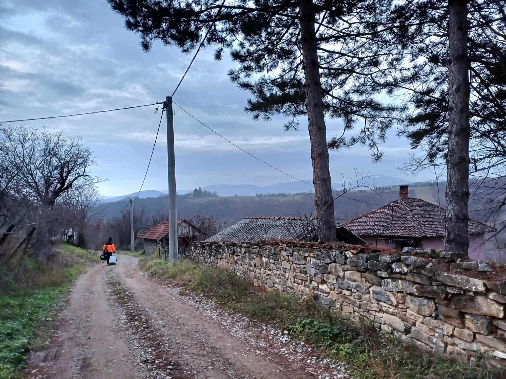

Kamenica, Serbia
Near Gornji Milanovac, Central Serbia
Nestled in the countryside near Gornji Milanovac in central Serbia, Kamenica offers a quieter perspective on the country's rural landscapes and traditional way of life. The surrounding Šumadija region is characterized by rolling hills, green fields, wooded slopes, and small settlements that preserve a close connection between local communities and their natural environment. Far from the pace of larger urban centers, Kamenica invites visitors to appreciate the simplicity of village surroundings and the peaceful rhythm of everyday life. My visit provided an opportunity to explore this less-traveled part of Serbia and capture personal impressions of its landscape and atmosphere. These photographs preserve my memories of Kamenica and the understated beauty of the Serbian countryside.
My Photo Gallery
Explore my personal travel photos from Kamenica.
View All Photos ↗